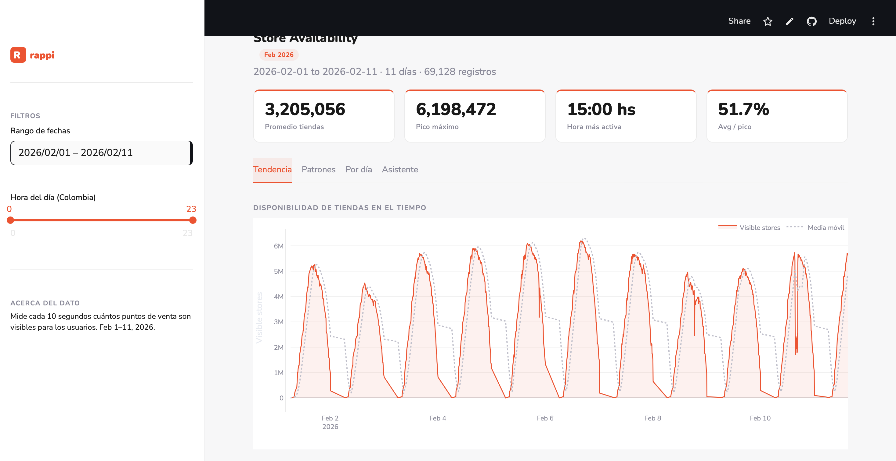
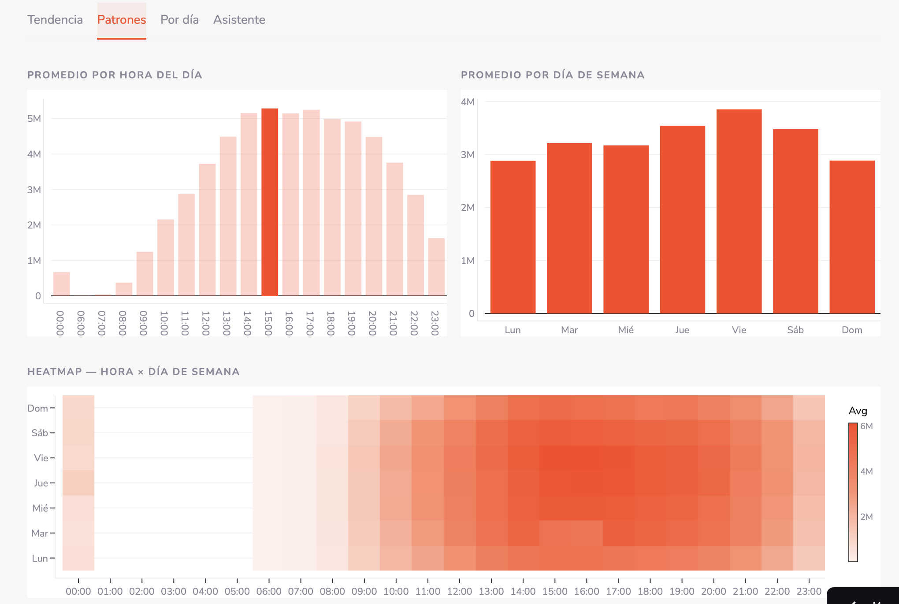
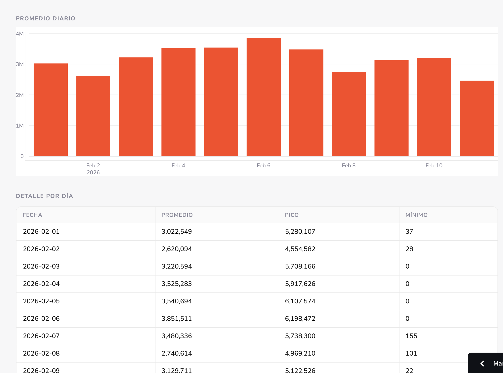
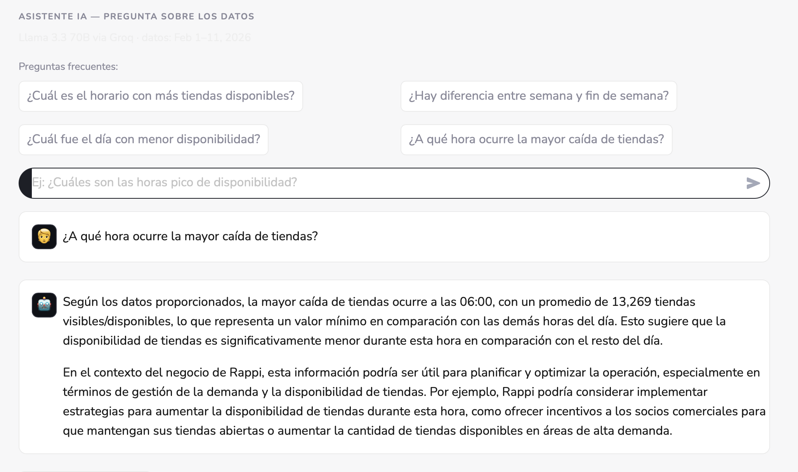

Visualización interactiva de disponibilidad de puntos de venta + asistente IA
La métrica synthetic_monitoring_visible_stores mide cada 10 segundos cuántos puntos de venta son visibles para los usuarios. 201 archivos CSV del portal de partners.
Dashboard web que unifica los archivos, visualiza con filtros interactivos y permite consultar los datos en lenguaje natural mediante un asistente IA.

Vista principal — KPIs + línea de tendencia
Parsea los 201 CSV, normaliza timestamps con zona horaria Colombia (UTC-5) y agrega estadísticas por hora, día y día de semana.
def load_all_data(): files = glob.glob(os.path.join(DATA_DIR, "AVAILABILITY-data*.csv")) records = [] for filepath in files: # cada fila = métrica · cada columna = timestamp rows = list(csv.reader(open(filepath))) for col_idx in range(4, len(header)): ts = parse_timestamp(header[col_idx]) # "Sun Feb 01 2026 06:11:20 GMT-0500" val = float(data_row[col_idx]) records.append({"timestamp": ts, "value": val}) return sorted(records, key=lambda x: x["timestamp"])
@st.cache_data def get_data(): records = load_all_data() summary = records_to_summary(records) return records, summary filtered = [r for r in records if start_d <= r["timestamp"].date() <= end_d and h0 <= r["timestamp"].hour <= h1]

Tab Patrones — barras por hora, día de semana y heatmap

Tab Por día — promedio diario y tabla de detalle
Las estadísticas agregadas del dataset se inyectan como system prompt, permitiendo responder preguntas sin enviar datos crudos a la API.
def chat(messages, summary): client = Groq(api_key=st.secrets["GROQ_API_KEY"]) return client.chat.completions.create( model="llama-3.3-70b-versatile", messages=[ {"role": "system", "content": build_context(summary)} ] + messages, max_tokens=1024, temperature=0.3, ).choices[0].message.content

Tab Asistente — preguntas sugeridas + respuesta contextual
Código, datos CSV y README en repositorio público. Control de versiones con git.
Deploy automático desde GitHub. La API key se gestiona como secret seguro, sin exposición en el código.
URL pública compartible. Sin instalación para el usuario final — solo abrir el enlace.
Dashboard desplegado en Streamlit Cloud, accesible desde cualquier navegador.
Código fuente, datos y README con instrucciones de instalación local.
Navegación: ← → o botones · Dataset: synthetic_monitoring_visible_stores · Feb 2026